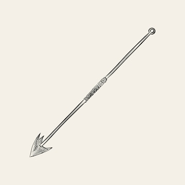

<!-- <h2><b>Causes of coral reef destruction</b></h2> 
<p>
    Despite other coastal areas where sewage and industrial spills are one of the major contributors toward coastal
    pollution, unfortunately that’s not an issue in Paje and Tumbatu Island. The degradation of coral reefs in these
    islands occurs as a result of three (3) major factors; 
</p> 
 <ul>
    <li>Illegal fishing methods</li>
    <li> Overfishing and</li>
    <li>Due to marine transport vessels.</li>
</ul>
<div>
    <ol type="1">
        <li>
            Illegal fishing practices; these include using small fishing nets, spears, guns, hammers, small hoes, wire
            ropes
            “madema ya waya” and the use of organic poisons namely ”ugovi and utupa”.
        </li>
        <li>
            Overfishing; due to the use of small fishing nets, the very small aquatic species with the coral reefs as
            their
            habitats are all destroyed.
        </li>
        <li>
            Marine transport vessels; fibers and boats when parking their anchors directly reaches the shallow water
            corals and
            break them through.
        </li>
    </ol>

</div> -->

<div class="container">
    <div class="card mt-4" style="background-color: #FFF;">
        <div class="card-header bg-success">
            <h1 class="text-center mt-2 text-uppercase"><b>Causes of coral reef destruction</b></h1>
        </div>
        <div class="card-body">
            <p class="p-body">Despite other coastal areas where sewage and
                industrial spills are one of the major contributors toward coastal
                pollution, unfortunately that’s not an issue in Paje and Tumbatu Island. The degradation of coral reefs
                in these
                islands occurs as a result of three (3) major factors;
            </p>
            <div>
                <ol type="1" style=" font-family: 'Times New Roman', Times, serif; line-height: 2.5rem;">
                    <li>
                        Illegal fishing practices; these include using small fishing nets, spears, guns, hammers, small
                        hoes, wire ropes
                        “madema ya waya” and the use of organic poisons namely ”ugovi and utupa”.
                    </li>
                    <li>
                        Overfishing; due to the use of small fishing nets, the very small aquatic species with the coral
                        reefs as their
                        habitats are all destroyed.
                    </li>
                    <li>
                        Marine transport vessels; fibers and boats when parking their anchors directly reaches the
                        shallow water corals and
                        break them through.
                    </li>
                </ol>
                  <!-- images -->
    <div class="row">
        <div class="col-md-6 mb-5">
                <div class="card-body text-center">
                    
                </div>
        </div>
        <div class="col-md-6 mb-5">
                <div class="card-body text-center">
                    
                </div>
        </div>
    </div>
            </div>

        </div>
        <div class="card-footer bg-success">
            <p class="text-center mt-2 text-uppercase">
                <small><b>Causes of coral reef destruction</b></small>
            </p>
        </div>
    </div>
</div>